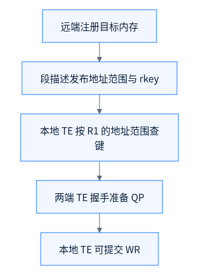

A 已在主机内存准备好对象 K。R1 在另一台机器的 Store Segment 中，示意起点为 base + 8 MiB，长度为 4 MiB。看清这次 RDMA WRITE 需要回答两个问题。网卡怎样找到正确的内存区间，提交或完成出错后哪些字节还可能在路上？
准备好地址、访问凭据与连接
Store 返回的副本位置指明 R1 在哪个 Segment、要写哪个地址范围。TE 再从 RDMA 段描述查与该地址范围和目标设备对应的 rkey。本地源缓冲区也需要注册，以便发送侧网卡用 lkey 读取 K。
内存描述与连接信息来自两处。内存注册后，TE 可在段描述里发布地址范围和访问键。建立队列对（QP）时，两端 TE 交换 QP 编号等连接信息。两类准备在条件保持有效时都可复用。

图注：沿一次需要建连的写入追踪准备动作。后续写入可以复用仍然有效的注册与连接。
本地 TE 把 slice 变成 WR
WR 描述希望网卡执行的工作。在这条固定路径上，RdmaEndPoint::submitPostSend 为每个 slice 构造一个 ibv_send_wr：
opcode为IBV_WR_RDMA_WRITE；send_flags为IBV_SEND_SIGNALED；sg_list指向 A 的本地已注册缓冲区，携带lkey；wr.rdma.remote_addr与rkey指向 R1 的远端已注册内存；- 最后调用
ibv_post_send。
TE 提交 WR 后，本地 RDMA 网卡（RNIC）读取源字节，经远端 RNIC 写到 R1 的已注册内存。远端 TE 参与连接准备。
本地 worker 从 CQ 观察完成
本地 WorkerPool 从完成队列（CQ）读取完成记录（CQE），用 wr_id 找回对应的 slice。一次轮询最多取 64 条。成功的完成记录记入该 slice，多个 slice 的结果再汇总到 task。失败的完成记录还要判断是否需要换路重试。
这里观察的是本地完成。写入成功的 CQE 告诉 TE 这条 WR 已完成，Store Master 是否已经接受对象提交要看后续的 PutEnd。

图注：软件提交发生在本地 TE 到本地 RNIC；对象字节经 RDMA WRITE 到达远端 RNIC，再 DMA 写入 R1。CQE 只表示本地完成；副本何时可见还要看 PutEnd 的提交结果。
等额度、提交失败、完成失败
同样卡在一次 R1 写入，处理方式取决于卡在哪一步。
- QP 或 CQ 暂时没有额度。
submitPostSend按剩余额度限制本轮可以提交多少 WR。暂时交不出去的 slice 留在待发送队列。 ibv_post_send在一串 WR 中返回错误。 代码用bad_wr找到首个未提交的 WR，将它和后继项交回失败处理。其前面的 WR 可能已经提交，仍要等 CQ 回收。- 已发出的 WR 返回错误 CQE。 Worker 区分本地网卡侧故障和远端或默认路径故障，有条件地尝试换本地设备或调整远端路径。重试额度用完、或找不到可用路径时，slice 记为失败。R1 仍可能留有先到达的字节。
这三类信号分别来自排队、提交和完成阶段。看日志时，对照当前阶段的 QP/CQ 额度、ibv_post_send 返回值或 CQE 状态，能把同一条“写失败”定位到具体动作。
什么时候能查到 R1
ibv_post_send 成功，只表示 WR 被本地提交；CQE 成功，只表示本地观察到了这次 WRITE 的完成。对发往 R1 的普通内存 Put，Store 客户端还要调用 PutEnd。Master 将 R1 从 PROCESSING 置为 COMPLETE 后，查询路径才能把它作为可读副本返回。Put 提交流程
“零拷贝”也有范围
RDMA 可以减少传统网络栈中的部分 CPU 搬运，但应用是否存在暂存、GPU 与主机之间是否复制，取决于整条路径。
讨论这条 WRITE 路径的性能时，应说明省掉的是哪一次拷贝，而不是把“用了 RDMA”当成全路径没有拷贝的证明。
总结
本地 TE 提交 WR，网卡把 K 的字节写入远端 R1，本地 worker 在 CQ 上回收完成。提交失败和完成失败需要分别处理。已经成功的写入片段仍可能留在 R1，副本对读者何时可见由 Store 的提交结果决定。
源码延伸 版本基线为 v0.3.13.post1。